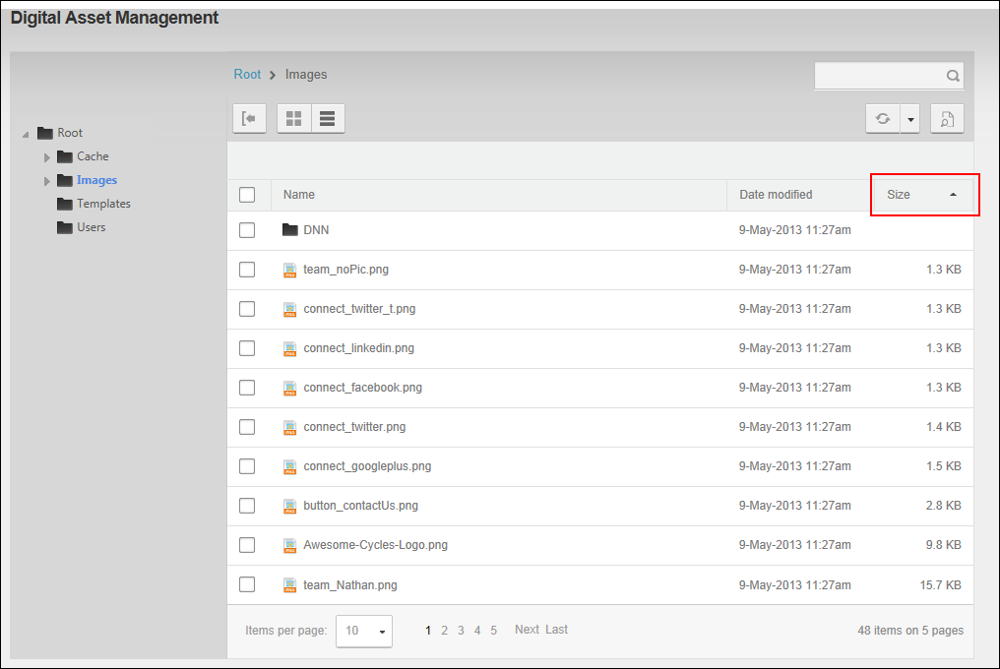

File Management - OR - Go to a Digital Asset Management Pro module.
File Management - OR - Go to a Digital Asset Management Pro module.The files displayed in the Files Window of the Digital Asset Management Pro module can be sorted alpha-numerically in either ascending or descending order by either the Name, Date Modified or Size column. The default sort order is in ascending order by file name (Name column) by default. All users can perform this task.
File Management - OR - Go to a Digital Asset Management Pro module.

Files ordered by file size in ascending order